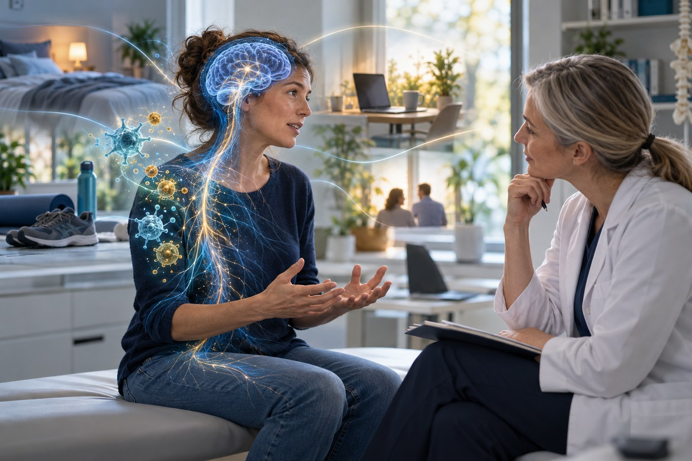

Fagstoff
Vedvarende smerte – mer enn hjernen og nervesystemet
Vedvarende smerte blir ofte forklart med hjernen og nervesystemet. Det er viktige deler av bildet, men ikke hele bildet. Ny avbildningsforskning peker også mot immunrelaterte prosesser. Funnene er interessante – men de er ikke en blodprøve, diagnose eller enkel årsaksforklaring.

Immunsystemet er en del av kroppens regulering
Immunsystemet forbindes gjerne med infeksjon og klassisk betennelse. Men det deltar også i beskyttelse, tilpasning, vevsreparasjon og kommunikasjon med nervesystemet. Celler som mikroglia og astrocytter bidrar til miljøet rundt nervecellene, mens signalstoffer fra immunsystemet kan påvirke hvor følsomme smertebanene blir.
Slike responser kan være nyttige og beskyttende. Etter skade kan de støtte reparasjon og normal tilpasning. I dyremodeller kan langvarig eller uhensiktsmessig nevroimmun aktivitet samtidig bidra til sentral sensitisering. Overføringen fra dyremodeller til mennesker er imidlertid vanskelig, og uttrykket «nevroinflammasjon» brukes ofte bredere enn det forskningen faktisk kan dokumentere.
Hva ser forskerne med PET?
Flere studier bruker PET-avbildning med sporstoffer som binder seg til proteinet TSPO. En oversiktsartikkel fra 2024 beskriver høyere TSPO-signal hos grupper med blant annet vedvarende korsryggsmerte, fibromyalgi og migrene sammenlignet med friske kontrollpersoner. En nyere studie av kronisk migrene fant også forskjeller i bestemte hjerneområder.
Resultatene er likevel ikke entydige. Den tidlige korsryggstudien omfattet bare ni matchede pasient–kontroll-par, og høyere signal i thalamus hang faktisk sammen med mindre smerte og lavere nivå av interleukin-6. Fibromyalgistudien fant utbredt høyere signal hos 31 pasienter, men sammenhengen med utmattelse var eksplorativ, og signalet var ikke tydelig knyttet til andre kliniske mål. Migrenestudien med aura hadde 13 pasienter og 16 kontrollpersoner. Dette er viktige hypotesegenererende funn, ikke ferdige kliniske tester.
TSPO-signal er ikke det samme som «betennelse forårsaker smerten»
TSPO finnes i flere celletyper, også i blodkar og andre strukturer som gir bakgrunnssignal. Signalnivået påvirkes dessuten av genetiske forskjeller og kompliserte analysevalg. PET kan derfor si noe om et biologisk mønster på gruppenivå, men ikke sikkert hvilke celler som er aktive, hvorfor signalet er endret eller om endringen er årsak, konsekvens eller en beskyttende respons.
Dette betyr også at funnene ikke kan brukes til å fortelle en enkelt pasient at smerten «sitter i immunforsvaret». De viser heller ikke at alle med samme diagnose har samme mekanisme. Vanlige blodprøver og slike forskningsbilder må ikke blandes sammen, og det finnes foreløpig ingen etablert TSPO-PET-test som styrer rutinebehandling av vedvarende smerte.
Sentral sensitisering er en mekanisme – ikke en klinisk diagnose
En ny fagartikkel av Hodges og medarbeidere viser hvorfor ordene vi bruker, betyr noe. IASP definerer sentral sensitisering som økt respons i nociseptive nerveceller i sentralnervesystemet på normal eller svak signaltilførsel. Strengt forstått er dette et nevrofysiologisk fenomen der både signalet inn og responsen ut må være kjent. Det kan dokumenteres direkte i dyremodeller, men vanligvis ikke hos en person i en konsultasjon.
Utbredt smerte, ømhet, allodyni eller forsterket respons ved gjentatt stimulering kan være forenlig med sentral forsterkning. De beviser ikke alene sentral sensitisering. Tester som temporal summasjon og betinget smertemodulering er indirekte mål og er ikke spesifikke for én mekanisme. En systematisk oversikt fant dessuten at spørreskjemaet Central Sensitization Inventory har svak sammenheng med eksperimentelle mål på nociseptiv sensibilisering og sterkere sammenheng med blant annet angst, depresjon og smertekatastrofering. Det gjør skjemaet relevant for å forstå symptombyrde, men ikke til en biologisk diagnose.
Nociplastisk smerte og sentral sensitisering er heller ikke synonymer. Nociplastisk smerte er en klinisk beskrivelse av smerte knyttet til endret nociseptiv bearbeiding når nociseptiv eller nevropatisk mekanisme ikke forklarer bildet fullt ut. Sentral sensitisering er én mulig medvirkende mekanisme. Hodges og medarbeidere anbefaler derfor at slutninger hos mennesker formuleres som sannsynligheter, med tydelig beskrivelse av hva som faktisk er målt.
En viktig innvending fra fagdiskusjonen
I Facebook-diskusjonen som fulgte delingen av artikkelen, beskrev flere deltakere en praktisk bekymring: «sentral sensitisering» kan bli en samlebetegnelse når man fortsatt bør lete etter en mer presis diagnose eller påvirkbar årsak. Andre fremhevet at dette kan være én av flere mekanismer ved vedvarende smerte, og at dokumentasjon fra dyr ikke uten videre kan overføres til enkeltmennesker. Kommentarene er ikke forskningskilder, men de illustrerer hvorfor forfatternes terminologiske presisjon er klinisk viktig.
En mekanismehypotese skal åpne for bedre spørsmål, ikke lukke utredningen. Dersom merkelappen brukes som forklaring på alt, kan den skjule lokal vevspatologi, nevropatisk smerte, systemisk sykdom, medikamentvirkning eller andre forhold som trenger egne tiltak. Samtidig må forsiktighet med ord ikke føre til at reelle sentrale bidrag avvises. Poenget er å være presis om sikkerhet og usikkerhet.
Smerte oppstår i et samspill
Den internasjonale smerteforeningen IASP definerer smerte som en ubehagelig sensorisk og emosjonell opplevelse knyttet til, eller lik den som er knyttet til, faktisk eller potensiell vevsskade. Definisjonen minner oss om at smerte er en reell personlig opplevelse. Den kan ikke reduseres til ett bilde, ett molekyl eller ett nervesignal.
Biologiske prosesser, søvn, belastning, tidligere erfaringer, bekymring, arbeid, relasjoner og muligheten til å være i aktivitet påvirker hverandre over tid. Det betyr ikke at smerten er «psykisk», eller at vev og sykdom er uviktig. Det betyr at kroppen og livet ikke kan deles i uavhengige bokser når vi skal forstå hvorfor smerten vedvarer.
Hva betyr dette i klinikken?
En god vurdering begynner fortsatt med å avklare diagnose, varselsymptomer, mulig nociseptiv eller nevropatisk driver, funksjon og hvilke belastninger som påvirker plagene. Ved et forløp som står fast, kan det være nyttig å gå gjennom søvn, aktivitetsnivå, restitusjon, legemidler, tilleggssykdommer og personens egne mål. Tiltak bør velges ut fra hva som er påvirkbart og meningsfullt – ikke ut fra én populær mekanisme eller ett spørreskjema.
Noen trenger justert belastning og gradert aktivitet. Andre trenger medikamentvurdering, hjelp med søvn eller migrene, eller samarbeid mellom fastlege, fysioterapeut/manuellterapeut, psykolog og smerteklinikk. At flere systemer kan være involvert, er et argument for presisjon og samarbeid – ikke for at alle skal ha samme «antiinflammatoriske» behandling.
Slik jobber jeg
Jeg bruker ikke «sentral sensitisering» som en ferdig diagnose eller som forklaring på alt. Jeg starter med systematisk sykehistorie og klinisk undersøkelse, vurderer varselsymptomer og mulige lokale, nevropatiske og systemiske bidrag, og ser deretter funnene sammen med funksjon, søvn, belastning, restitusjon og livssituasjon. En sentral mekanisme kan inngå som en arbeidshypotese når mønsteret støtter det, men jeg er tydelig på usikkerheten. Når utviklingen ikke går som forventet, revurderer jeg forklaringen og samarbeider med annet helsepersonell fremfor å presse videre med én metode.
Kilder
- Loggia ML. «“Neuroinflammation”: does it have a role in chronic pain? Evidence from human imaging». Pain. 2024. Hovedkilde. Kilde.
- Hodges PW et al. «Central sensitization: when is this the right terminology?». Pain. 2026;167(9):1986–1991. Kilde.
- Adams GR et al. «Do “central sensitization” questionnaires reflect measures of nociceptive sensitization or psychological constructs? A systematic review and meta-analyses». Pain. 2023. Kilde.
- Loggia ML et al. «Evidence for brain glial activation in chronic pain patients». Brain. 2015. Kilde.
- Albrecht DS et al. «Brain glial activation in fibromyalgia – A multi-site positron emission tomography investigation». Brain, Behavior, and Immunity. 2019. Kilde.
- Albrecht DS et al. «Imaging of neuroinflammation in migraine with aura: A [11C]PBR28 PET/MRI study». Neurology. 2019. Kilde.
- Chang Y et al. «Evidence for brain glial activity in chronic migraine patients: a [11C] PBR28 PET/MR study». European Journal of Nuclear Medicine and Molecular Imaging. 2025. Kilde.
- Guilarte TR et al. «Imaging neuroinflammation with TSPO: A new perspective on the cellular sources and subcellular localization». Pharmacology & Therapeutics. 2022. Kilde.
- Ji RR et al. «Neuroinflammation and Central Sensitization in Chronic and Widespread Pain». Anesthesiology. 2018. Kilde.
- Raja SN et al. «The revised International Association for the Study of Pain definition of pain: concepts, challenges, and compromises». Pain. 2020. Kilde.
Emneord
- Vedvarende smerte
- Immunsystem
- Nevroinflammasjon
- TSPO PET
- Sentral sensitisering
- Nociplastisk smerte
- Helhetlig smerteforståelse